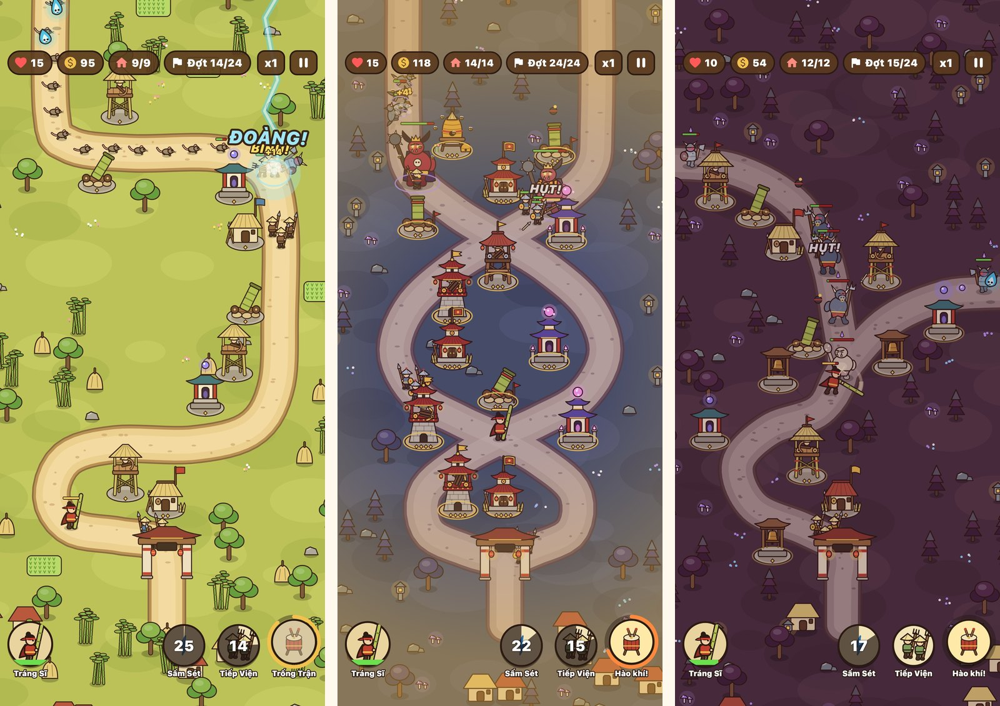

Giữ Làng
Thủ thành giữ cổng làng Việt

Về trò chơi
Quái kéo về làng! Bạn dựng chòi nỏ, miếu phép, pháo tre bên đường, gọi dân binh ra chặn, nổi trống trận và giữ lấy cổng làng trong một game thủ thành lấy bối cảnh làng quê Việt xưa.
- 105 màn chia 15 chương, mỗi chương kết thúc bằng một trận đánh Quỷ Vương.
- 8 loại công trình, mỗi loại 4 cấp; xây ở bãi đất trống nào cũng được.
- Quái mỗi chương có một đặc tính riêng và một công trình khắc chế.
- Chơi một mình, không cần tài khoản, chơi được khi không có mạng.
- Miễn phí, không có mua hàng trong ứng dụng. Game có quảng cáo.
Hỗ trợ
Gặp lỗi, có góp ý hoặc cần giúp đỡ, hãy viết thư cho chúng tôi:
Xin kèm tên máy, phiên bản iOS và màn chơi đang gặp vấn đề để chúng tôi xử lý nhanh hơn.
Câu hỏi thường gặp
- Tiến trình chơi được lưu ở đâu?
- Trên chính thiết bị của bạn. Gỡ game sẽ xoá tiến trình; game chưa có đồng bộ giữa các máy.
- Xây công trình thế nào?
- Chạm một bãi đất trống rồi chạm công trình muốn xây. Giữ ngón tay trên nút để xem trước chỉ số và tầm đánh. Bảng "Cách chơi" ở màn hình chính có hướng dẫn đầy đủ.
- Vì sao quái ở chương sau khó hạ?
- Quái mỗi chương có một đặc tính riêng. Chạm dải thông tin ở đầu bảng chọn màn để xem đặc tính ấy và công trình khắc chế (có ngôi sao trên nút xây).
- Tắt nhạc hoặc tiếng động ở đâu?
- Hai nút hình loa và nốt nhạc ở góc trên bên phải màn hình chính, hoặc trong bảng tạm dừng của trận đấu.
- Có bắt buộc xem quảng cáo không?
- Quảng cáo có thưởng là tuỳ bạn chọn xem để cứu làng khi thua. Quảng cáo toàn màn hình chỉ hiện giữa hai trận, không bao giờ chen vào lúc đang đánh.
- Đổi lựa chọn "cho phép theo dõi" ở đâu?
- Trên iPhone: Cài đặt → Quyền riêng tư & Bảo mật → Theo dõi. Xem thêm chính sách quyền riêng tư.